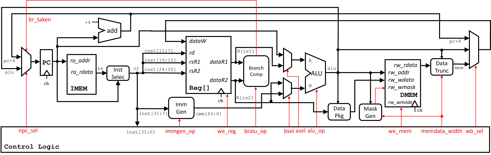
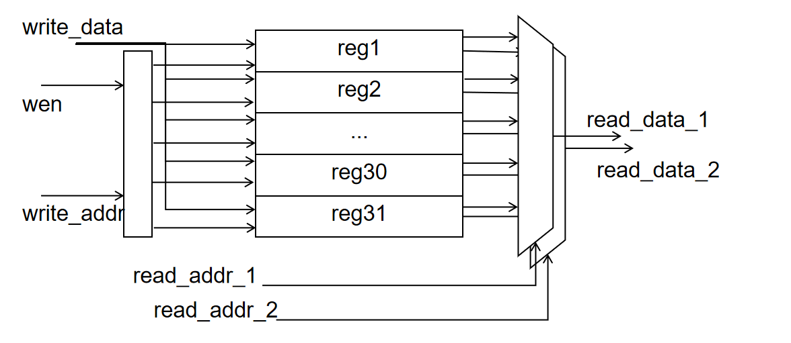
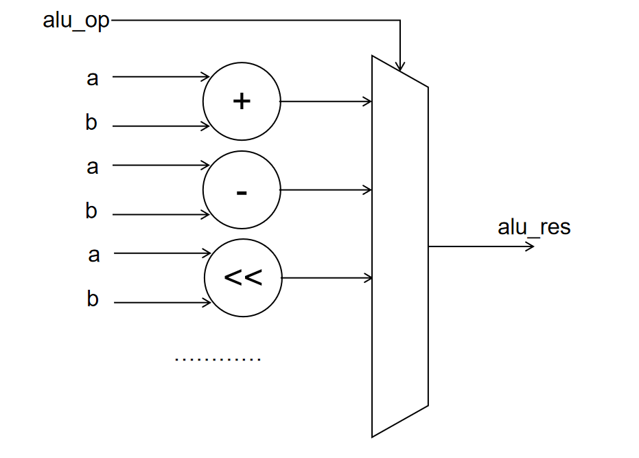
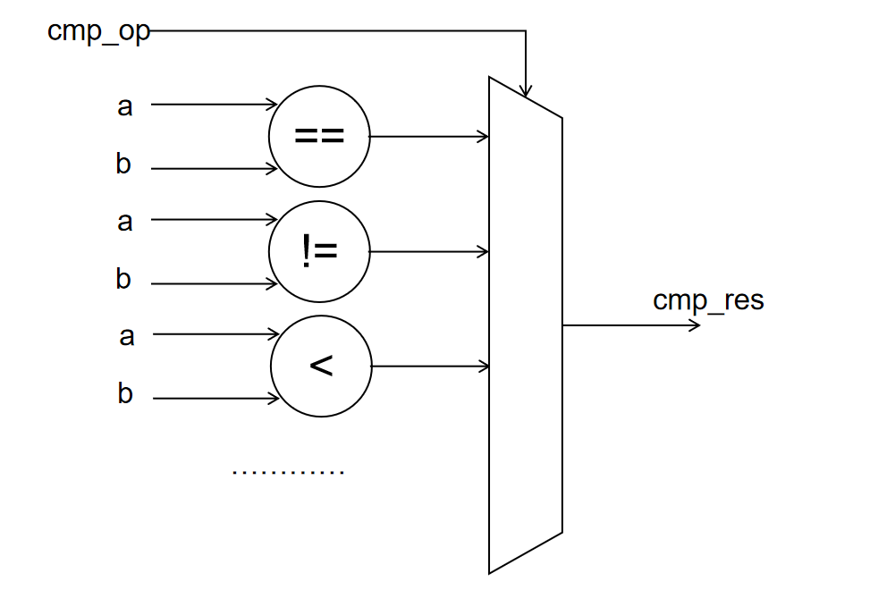

project: 单周期 CPU 数据通路设计 ¶
实验目的 ¶
- 了解 CPU 设计的基本原理
- 设计 CPU 数据通路
- 为之后搭起单周期 CPU 打下基础
实验环境 ¶
- 操作系统：Windows 10+ 22H2，Ubuntu 22.04+
- VHDL：Verilog，SystemVerilog
背景知识 ¶
单周期 CPU ¶
单周期 CPU 主要特征是在一个周期内完成一条指令，也就意味着其 CPI (cycle per instruction) 是 1。 考虑到不同的指令都需要在一个周期内完成，因而单周期 CPU 时钟频率是以执行最慢的那条指令作为基准，这也是单周期 CPU 最大的缺陷之一。 我们可以把单周期 CPU 分成数据通路和控制单元两个模块，本次实验将完成数据通路模块。
数据通路设计 ¶
为了之后能和流水线 CPU 进行衔接，我们把单周期 CPU 数据通路划分成 5 个阶段（stage）:
- Instruction Fetch (IF)
- Instruction Decode (ID)
- EXecution (EX)
- MEMory access (MEM)
- register Write Back (WB)
这 5 个 stage 所做的操作解释：
- 获取指令阶段 (IF)
- 从 Instruction Memory 中获取 32 位指令
- 令当前的 PC (Program Counter) 增加 4（PC = PC + 4，使当前 PC 指向下一条 32 位的指令，Instruction Memory 是 byte-addressing，所以是 +4 而不是 +32）
- 指令译码阶段 (ID)
- 拿到指令之后，我们需要知道指令能提供各种信息包括 Opcode, Rs1, Rs2, Rd, Imm 等等，所以需要对指令进行译码，提取信息。
- 译码完成后，我们可以通过拿到的 Rs1, Rs2 读取相应的寄存器值
- 执行阶段 (EX)
- 执行一些运算操作，包括 +，-，*，/，逻辑运算或左移、右移等等
- 跳转地址的计算也可以在这个阶段执行
- 访存阶段 (MEM)
- 从 Data Memory 中拿到数据
- 写回阶段 (WB)
- 把计算后获得的数据或者从 Data Memory 读的数据写回到寄存器中
数据通路图 ¶

模块设计要点 ¶
- 示意图中的处理器为哈佛架构，内存分为 Instruction Memory 和 Data Memory。为了兼容输入样例，我们需要实现冯诺依曼架构。简便起见，我们将两块内存合并为一个双口内存，其中 0 号端口为提供给 IF 取指阶段的只读端口，1 号端口为提供给 MEM 阶段的读写端口，并且支持字节掩码
- Add 模块就是简单的加法，注意其和 ALU 的区别
- Registers 是 32 个 64 位寄存器
- 因为 RISC-V 的 Imm 在指令中的位置不是固定的，所以需要针对不同指令生成相应的 Imm，当然 Imm Gen 模块也可以放到之后要实现的控制单元模块中或者说指令解码器中
- ALU 模块根据要实现的指令实现具体的操作，注意要充分利用 Verilog 提供的操作符，例如 +, -, <<, >>> 等
数字电路设计要点 ¶
数字电路根据其特点大概可以分成组合电路和时序电路两大类，其概念和特性已经在课上讲述，在这里不多阐述。在单周期 CPU 设计中，这两种电路设计归纳如下：
- 在实验中， Instruction Memory 是组合电路，Data Memory 是时序电路（仅限于本实验，实际中并非如此）
- Registers、PC 模块使用时序电路
- ALU、Add 模块使用组合电路
- Imm Gen、Mux 模块使用组合电路
实验步骤 ¶
实验前准备 ¶
启动安装在你电脑中的 Ubuntu 22.04 环境（ WSL 或虚拟机cd 移动到 sys1-sp24 目录下，执行下面的命令：
Memory 设计 ¶
在本实验中，sys-project/general/DRAM.v实现了一个简单的内存模型 :
DRAM 根据 FILE_PATH 参数的文件地址进行初始化，我们在sys-project/testcode/testcase下提供了一些测试文件，用于加载到 RAM 中，测试你的 CPU 是否能合理得执行指令。其中.hex后缀的为实际加载到 RAM 中的文件，你需要在修改project/include/initial_mem.vh头文件的FILE_PATH参数为你本地的绝对路径。
.elf后缀的文件为测试输入的原始 ELF 文件，协同测试框架会使用该文件。
.S后缀的文件为测试样例对应的汇编代码，其中测试了部分指令（lw, sw, addi, bne
我们会在补充更多测试样例，并且我们欢迎同学们提交自己的测试样例。
Memory 接口 ¶
本实验使用的内存模型很简单，这样导致 CPU 和 Memory 的交互操作非常简单，且可以在一个周期执行多次内存操作。但是实际上的内存操作是很复杂的，需要复杂的时序控制和多周期的执行时间，因此我们在本次实验中提供了一个相对较为复杂且完备的 Memory 接口，虽然在本实验中无法体现它的效果，但是在之后系统 II、系统 III 的实验中，大家会慢慢感受到它的优秀之处，这里做一个简要介绍。
Memory 接口由四个数据通道组成：
- 读请求通道：该通道线路相互配合，将 Core 的读请求发送给 Memory
- r_request_bits：类型 RrequestBit，为读请求的数据包
- raddr：类型 addr_t，为需要读的内存地址
- r_request_valid：类型 ctrl_t，Core 和 Memory 关于 r_request_bits 的握手信号
- r_request_ready：类型 ctrl_t，Core 和 Memory 关于 r_request_bits 的握手信号
- 读响应通道：该通道线路相互配合，将 Memory 读到的结果返还给 Memory
- r_reply_bits：类型 RreplyBit，为读响应的数据包
- rdata：类型 data_t，为读到的内存数据
- rresp：类型为 resp_t，为内存访问过程中的报错信息
- r_reply_valid：类型 ctrl_t，Core 和 Memory 关于 r_reply_bits 的握手信号
- r_reply_ready：类型 ctrl_t，Core 和 Memory 关于 r_reply_bits 的握手信号
- 写请求通道：该通道线路相互配合，将 Core 的写请求发送给 Memory
- w_request_bits：类型 WrequestBit，为写请求的数据包
- waddr：类型 addr_t，为需要写的内存地址
- wmask：类型为 mask_t，为写操作的字节掩码
- wdata：类型为 data_t，为写入的数据
- w_request_valid：类型 ctrl_t，Core 和 Memory 关于 w_request_bits 的握手信号
- w_request_ready：类型 ctrl_t，Core 和 Memory 关于 w_request_bits 的握手信号
- 写响应通道：该通道线路相互配合，将 Memory 写的结果返还给 Memory
- w_reply_bits：类型 WreplyBit，为写响应的数据包
- bresp：类型为 resp_t，为内存访问过程中的报错信息
- w_reply_valid：类型 ctrl_t，Core 和 Memory 关于 w_reply_bits 的握手信号
- w_reply_ready：类型 ctrl_t，Core 和 Memory 关于 w_reply_bits 的握手信号
当进行读操作的时候，首先通过读通道的握手，Master 将读请求的内容发送给 Slave，然后等待 Slave 通过读响应通道的握手，将读操作的结果反馈给 Master；写操作同理，Master 通过写请求通道握手发送请求内容，然后等待写响应握手得到 Slave 写的结果。
不过本次实验因为是单周期 CPU，一个周期内一定可以得到读写结果，所以 valid-ready 握手一直成立，大家只要将需要读写的通道常开即可。对于复杂的内存访问操作会遇到各种待处理的内存错误，所以接口会返回 rresp、bresp，这些在之后的系统 II 和系统 III 中大家也会慢慢遇到，这里可以先不考虑。本次实验只要求大家学习使用 interface 的基本语法即可。
我们的 Core 和 DRAM 之间用 mem_ift 相连接。为此我们将 DRAM 的输入输出接口包装为 mem_ift 的接口模式，得到 Mem_ift_DRAM 模块。
数据通路设计 ¶
根据 3.3 中给出的参考数据通路图，实现数据通路（当然也鼓励自己设计数据通路
我们给出部分模块的代码框架供同学们参考（也可以自由发挥
Register File¶
可以参考如下电路图：

大家也可以参考 DRAM 的写法来编写 Regfile，顺便思考 regfile 和 dram 有什么内在联系。请注意 zero 寄存器恒等于 0。
ALU¶
大家可以参考如下电路图：

Cmp¶
大家可以参考如下电路图：

多路选择器的电路开销总是最大的，大家可以思考如何对电路进行优化，用更少的电器元件得到同样的电路
Instruction Selection¶
由于内存访存读回的数据为是 64 位，因此需要根据 PC 来进一步判断需要执行的是高 32 位令还是低 32 位，选择结果传给译码模块。
Data Package¶
根据传入的寄存器中数据以及访存地址来进行对应的移位操作，使写入内存的数据的地址对应到所需的地址处，打包后的数据输入给内存模块。
Data Mask Generation¶
根据要写入数据的宽度以及访存地址来决定要打包后的数据中的有效位。
Data Truncation¶
根据要读取数据的宽度对访存得到的 64 位数据进行调整。
Core（DataPath）¶
在你的控制通路中集成上面实现的这些模块，声明为 Core 模块。Core 模块有两个 mem_ift 的内存接口和 DRAM 连接，其中 imem_ift 仅使用读请求和读响应通道，向 DRAM 请求指令；dmem_ift 使用四个通道分别进行 DRAM 的读写操作。
该模块的顶层引脚如下，cosim_core_info 结构复杂连接 core 内部的数据信息，这些信息会被用于差分测试和硬件调试，请务必仔细连接。
注意上述cosim_core_info信号中要求必须要引出的有：pc、inst、rd_we、rd_id、rd_data。
文件结构 ¶
本实验的文件数目较多，为了方便同学们进行文件管理，我们设置了如下的文件结构：
硬件部分 ¶
- general：提供给同学们的既用于仿真、也用于综合的代码
- include：提供的一些头文件
- ip：用于差分测试的 spike 静态链接库和头文件，和 sim 文件配合进行差分测试
- 当前 ip 文件夹提供的静态链接库是 x86 架构的，如果部分同学不是 x86 的机器，请在 repo 文件夹运行
make ip_gen自行编译静态链接库
- 当前 ip 文件夹提供的静态链接库是 x86 架构的，如果部分同学不是 x86 的机器，请在 repo 文件夹运行
- sim：仅用于仿真的 v、sv、cpp 代码
- syn：仅用于综合的 v、xcd、sv 代码
- tcl：vivado 用于综合的脚本
软件部分 ¶
testcode 文件夹下：
- testcase: 初始化 0-0x1000 的内存，进行简单的功能测试
- sample：简单测试样例，用于熟悉实验结构
- rtype：测试 R 型指令
- itype：测试 I 型指令
- stype：测试 S 型指令
- btype：测试 B 型指令
- utype：测试 U 型指令
- jyupe：测试 J 型指令
- remain：测试其他类型的指令
- full：测试所有类型的指令
编译方式如下，不过多数时候不需要手动执行 Makefile 进行编译：
- 运行
make -C testcase TESTCASE=xxx，编译其中指定的测试样例- 例如
TESTCASE=sample，编译 sample 文件夹的测试样例，得到 sample.hex - 如果需要得到综合下板的测试样例，则运行
make -C testcase board TESTCASE=xxx，这样执行完毕可以顺利死循环在 pass 指令处
- 例如
工作区管理 ¶
- src/project 是用于编译综合的工作区，project 的各个子文件夹作用如下：
- include: 用于存放用户自己编写的头文件
- submit: 用于实现用户自己的硬件部分代码，包括编写自定义模块和补全我们提供的模块
- Makefile: 编译综合的脚本
Tip
即 src/project 是实际需要编写你自己的代码、编译运行、提交的工作区。而 repo/sys-project 是实验框架，不需要也不可以修改。
Makefile 脚本功能 ¶
- make verilate：进行不下板仿真，运行在 repo/sys-project/testcode 中执行
make sim后得到的测试代码 - make board_sim：进行下板仿真，运行在 .../testcode 中执行
make board后得到的测试代码 - make wave：gtkwave 查看波形
- make bitstream：生成 bit 流
- make vivado：打开 vivado
希望这些脚本的改动可以方便大家编译安装工具、进行仿真测试、进行综合下板，不过更希望大家可以仔细阅读这些脚本，从中学习到更多的知识。如果大家有更好的管理方法来提高脚本的质量，也欢迎和助教们联系。
未完待续 ¶
欲知后事如何，请看下个实验文档